AWS EKS Setup
Note
The Lamini installer is only available when self-managing Lamini Platform. Contact us to learn more.
Summary
This installation covers the steps of setting up an AWS EKS cluster, and creating a S3-backed NFS storage gateway for installing Lamini Platform.
- Prerequisites
- Install AWS CLI
- Configure AWS credential
- Create Key Pair
- Create EKS Cluster
- Set Up NFS
- Install Lamini Installer
Prerequisites
An AWS account with GPU instances available, such as the G type. We recommend having sufficient resources with 8-GPU instance, such as the g6e.48xlarge.
Install AWS CLI
Follow the AWS instruction to install the AWS CLI Check the AWS CLI installation.
Configure AWS credential
Create and get the AWS Access Key ID and AWS Secret Access Key.
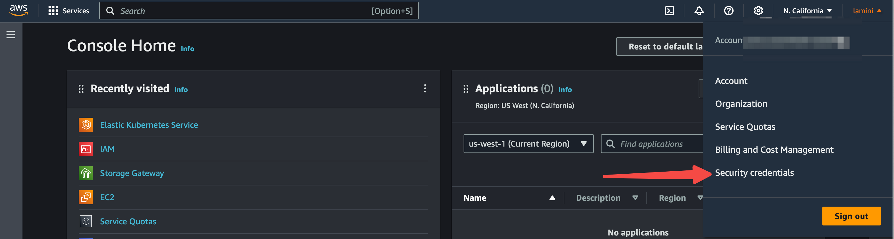
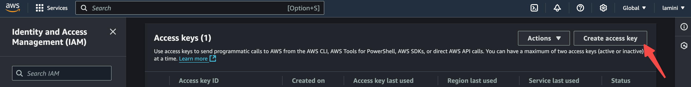
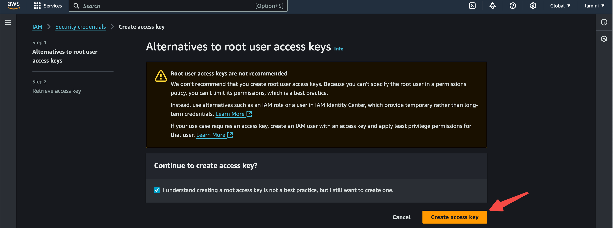

Configure AWS credential.
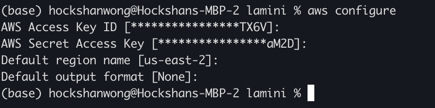

Create Key Pair
Create Key Pair with AWS CLI, this is used to get SSH access to the nodes in the EKS cluster.
aws ec2 create-key-pair --key-name my-eks-keypair --query 'KeyMaterial' --output text > my-eks-keypair.pem
chmod 400 my-eks-keypair.pem
Create EKS Cluster
Use eksctl to manage EKS clusters. Eksctl is a "battery-included" tool, which manages
many dependent aspects of EKS cluster. For example, it automatically install GPU plugins when
requesting GPU instances, which is not the case when manually create with EKS web UI or aws CLI.
To install eksctl on mac:
To Create a new EKS cluster:
eksctl create cluster \
--name=<name> \
--region=<region> \
--node-type=<type> \
--nodes 2 \
--nodes-min=2 \
--nodes-max=2 \
--managed \
--ssh-access \
--ssh-public-key=my-eks-keypair
To add a new node group to an existing EKS cluster:
eksctl create nodegroup \
--cluster=<cluster-name> \
--name=<node-type>-group \
--region=<region> \
--nodes=1 \
--nodes-min=1 \
--nodes-max=1 \
--node-type=<node-type> \
--managed \
--ssh-access \
--ssh-public-key=my-eks-keypair
To remove a node group from an existing EKS cluster:
To get access to a EKS cluster:
REGION=<your-region>
eksctl get cluster --region=${REGION}
# This will write kube config for the cluster
eksctl utils write-kubeconfig --cluster=yaxiong-test-3 --region=${REGION}
kubectl get node
Set Up NFS
Create AWS S3 File Gateway. Type Storage Gateway in the search bar of AWS Console.

Click on Create gateway. 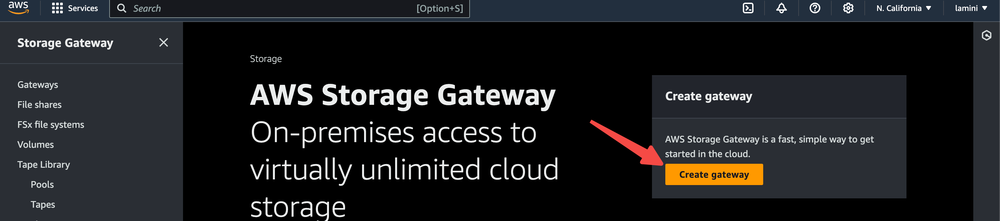
Enter gateway name and timezone.

Launch EC2 instance as the gateway instance, choose the following options: Platform options: Amazon EC2; VPC network: Select the VPC of the created EKS cluster; Key pair: Select the created instance key pair; then click Launch the instance. 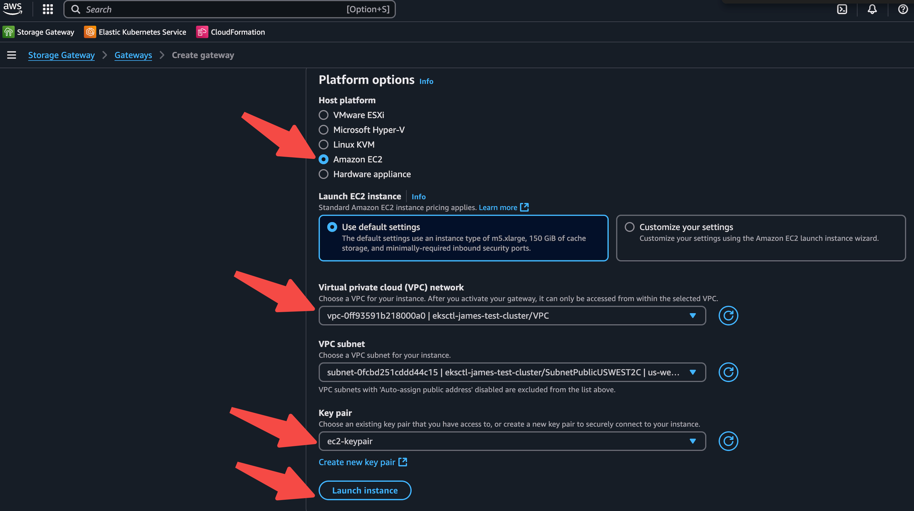
Connect to AWS - select the IP address connection option and publicly accessible endpoint option.

Activate gateway. 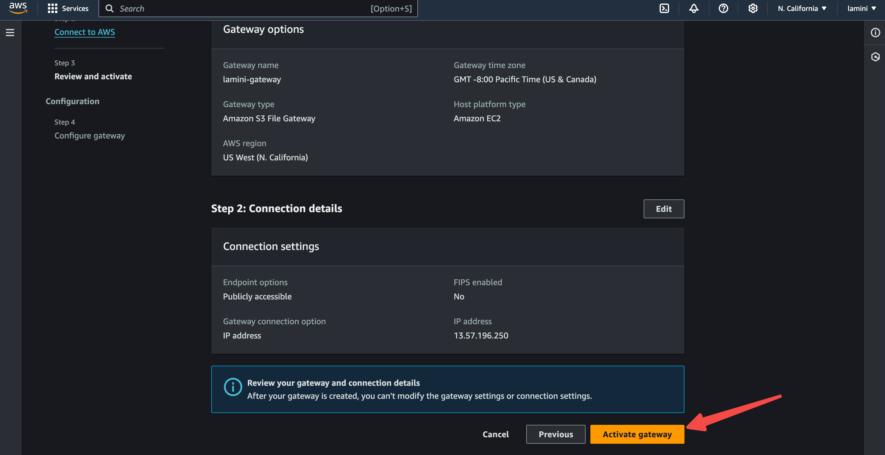
Configure after activating the gateway. 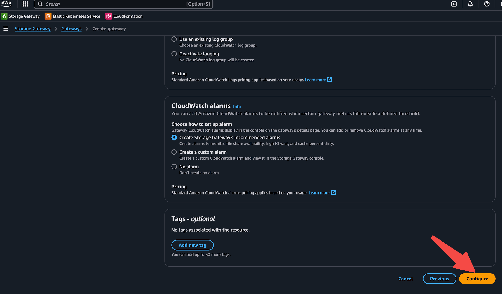
Create file share. 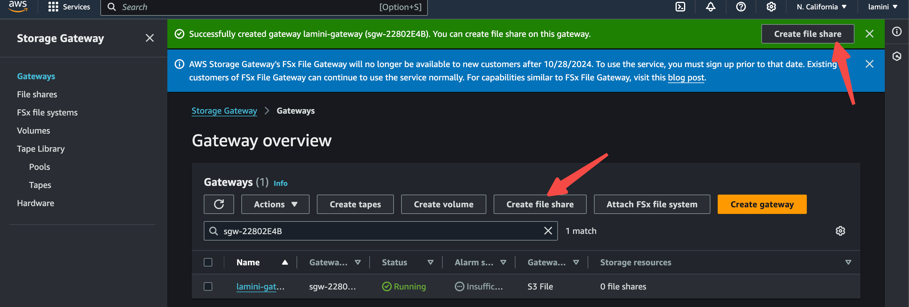
Select the gateway that just created, set NFS protocol, and then create the S3 bucket.
 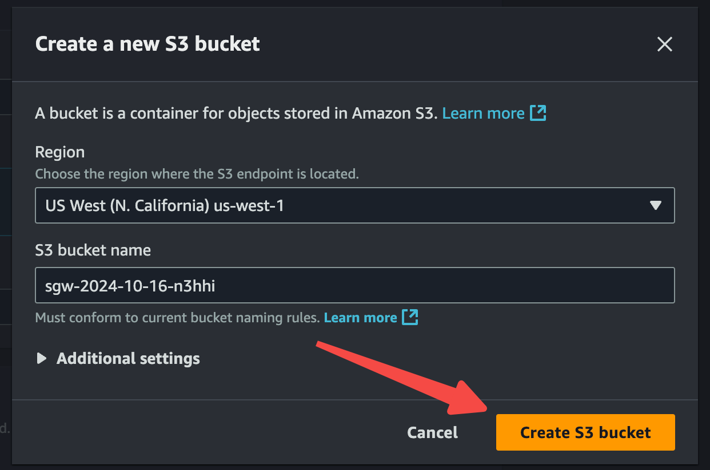
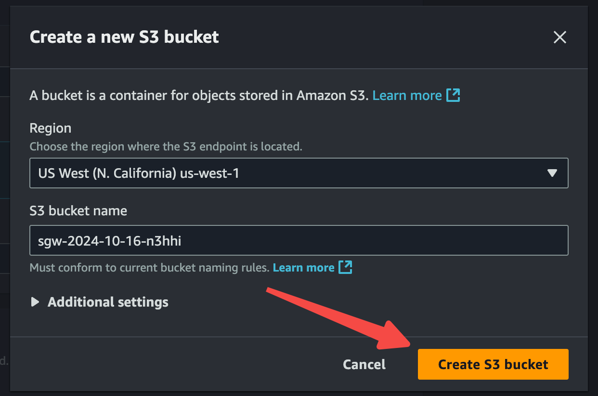
Select the S3 that was just created.

Create the file share.
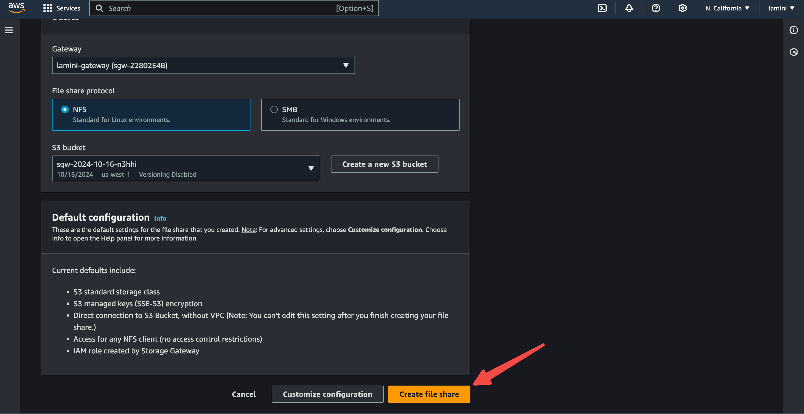
Add the file share client access restriction as needed.
 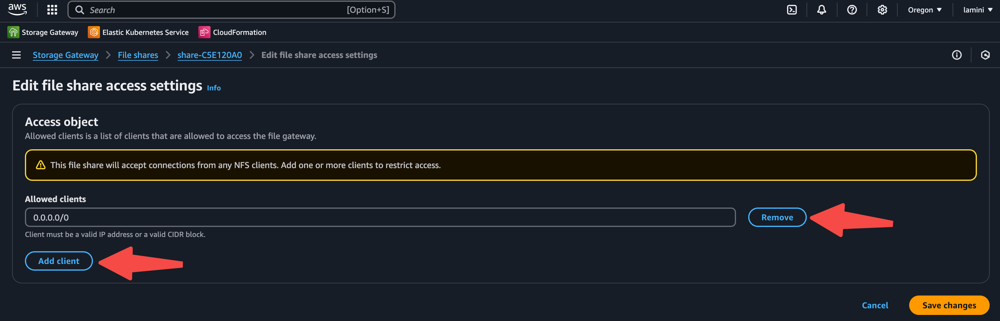
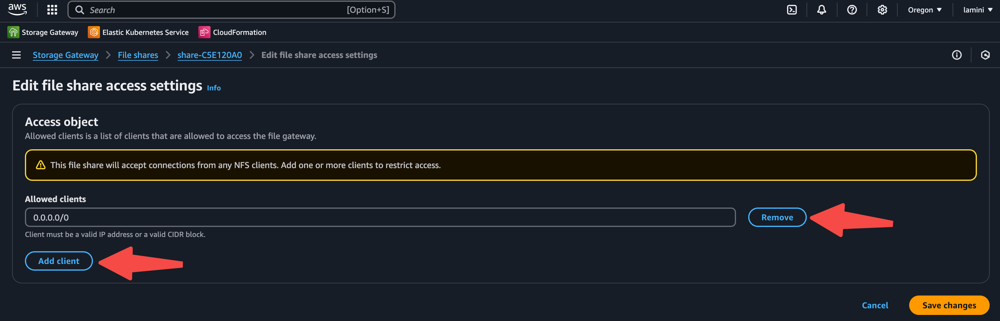
Note down the NFS IP and path that will be used in the NFS setup for Lamini installation. They are used as NFS_IP in NFS_SUBFOLDER_PATH for installing NFS provisioner when installing Lamini Platform.
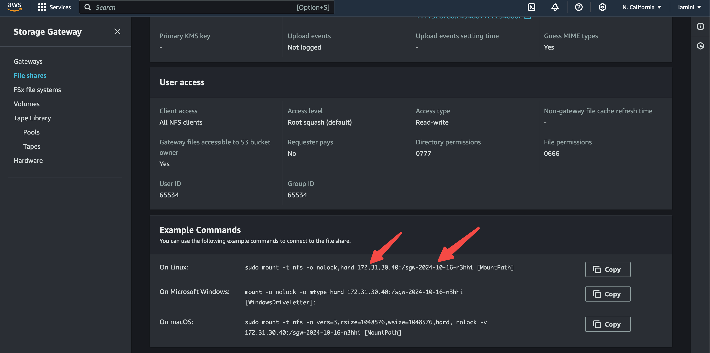
Install Lamini Platform with installer
Follow the Kubernetes installation guide to install Lamini Platform with the installer.